DISCOVERY
The homepage is structured around finding work, not simply presenting a hero.
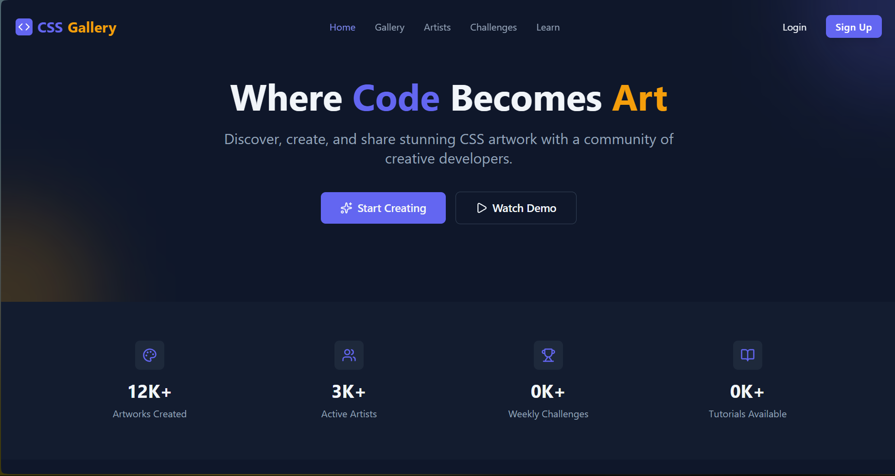

Creative work needs more than a gallery wall. Discovery, creator identity, challenges and learning all need to live inside one coherent product.
The supplied build views show the product as a connected system: landing and discovery, gallery browsing, artist records, challenge states and a learning area.
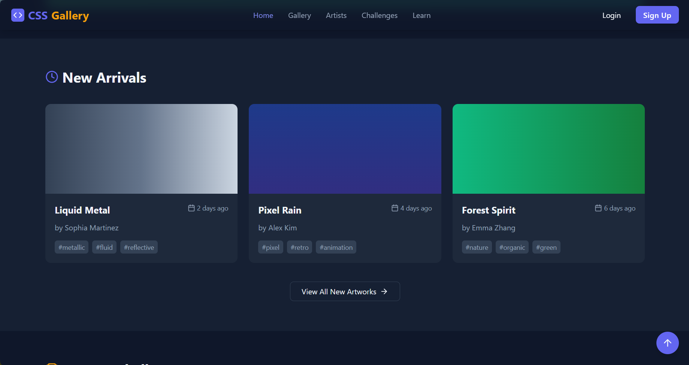
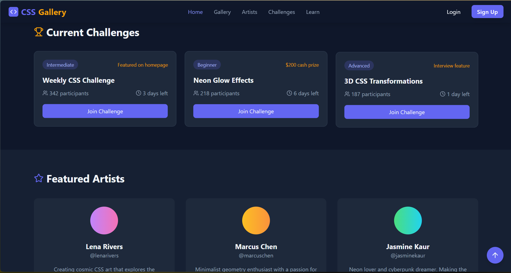
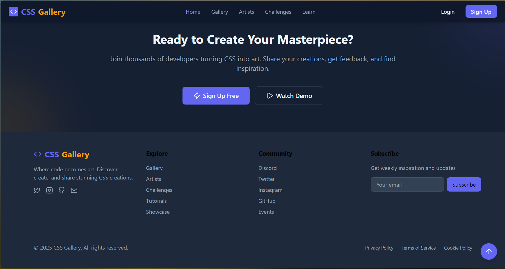
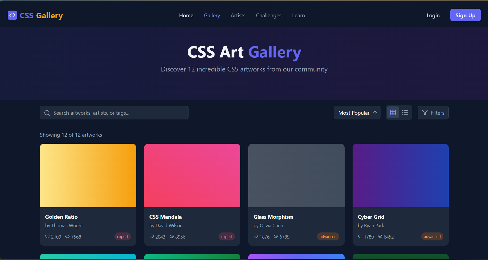
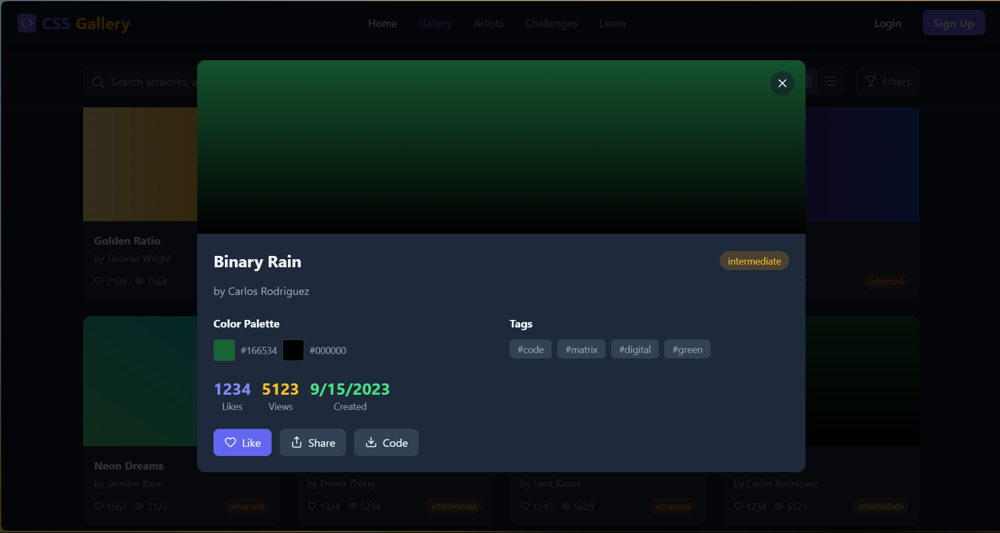
This section translates the supplied interface into the sequence of responsibilities visible in the build record.
The homepage is structured around finding work, not simply presenting a hero.
Artists and artwork are treated as first-class parts of the product.
The project connects inspiration with challenges and learning instead of ending at passive browsing.
A build record that connects the visible interface to the job the product is trying to do.
These are the actual project images supplied for the archive. They are shown without fabricated performance claims or fake client outcomes.
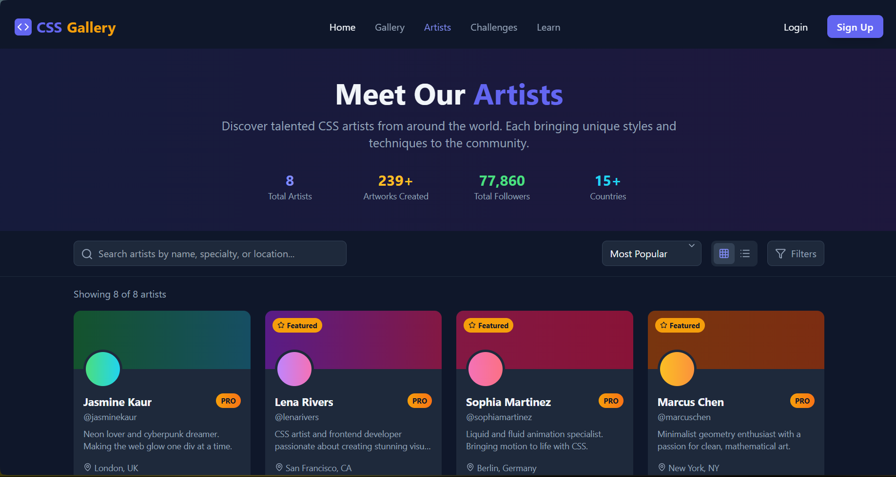
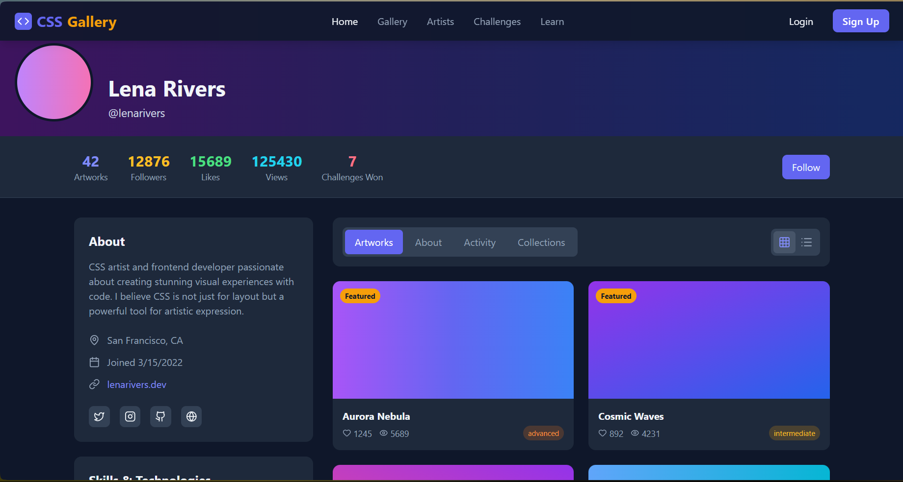
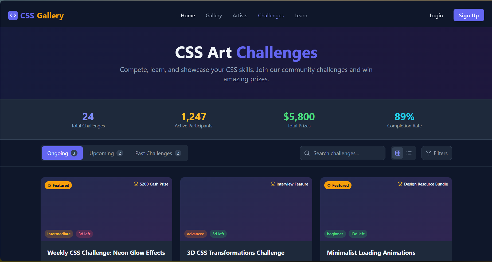
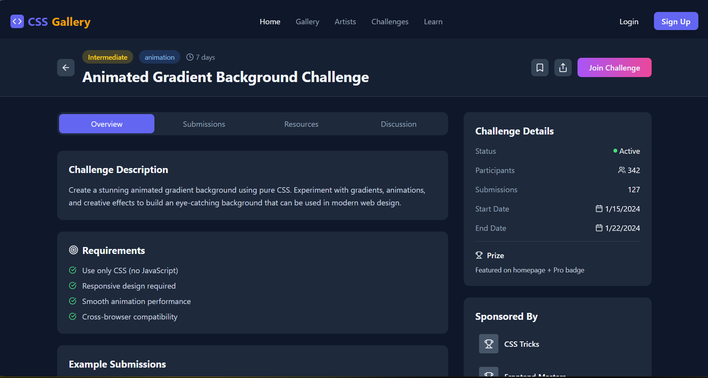
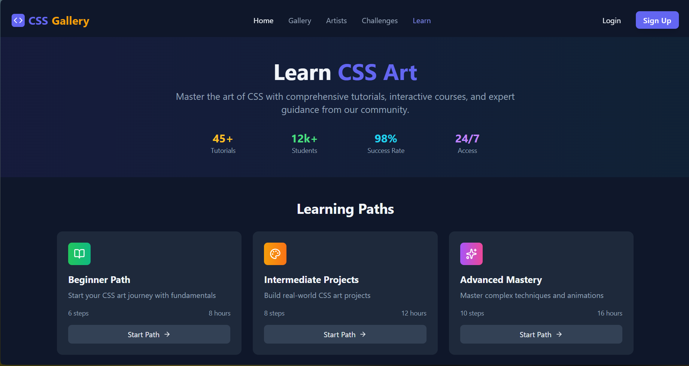
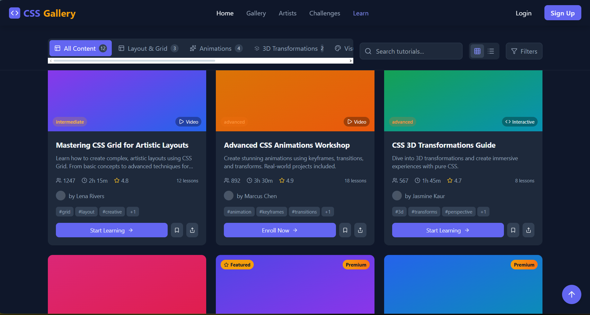
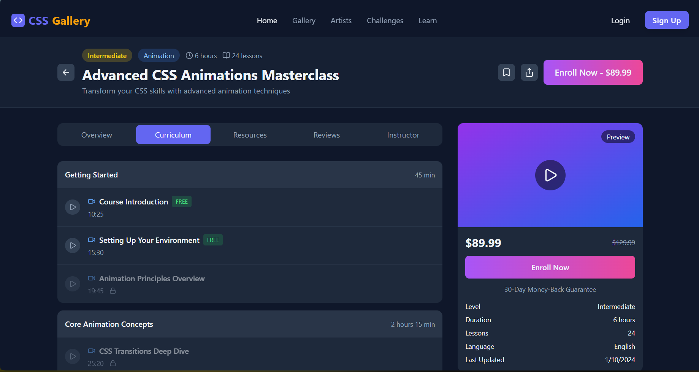
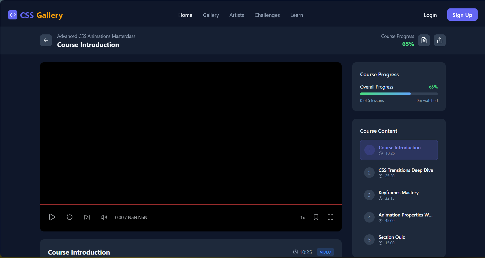